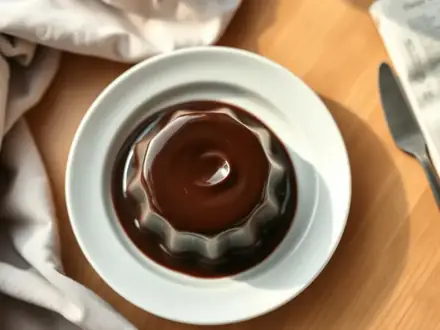
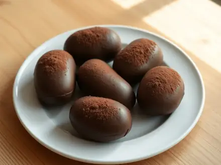

Выпечка и десерты
Шарлотка, блины, сырники и сладкое к чаю. 69 рецептов: у каждого время, калории и БЖУ на порцию, пошаговые инструкции и список покупок
 Шоколадный кекс в кружке в микроволновке7 мин · 506 ккал · Б 15 г · Десерт
Шоколадный кекс в кружке в микроволновке7 мин · 506 ккал · Б 15 г · Десерт Творожный десерт с ягодами без выпечки15 мин · 204 ккал · Б 21 г · Десерт
Творожный десерт с ягодами без выпечки15 мин · 204 ккал · Б 21 г · Десерт- Финиковые конфеты с орехами20 мин · 289 ккал · Б 5 г · Десерт
 Запечённые яблоки с мёдом и орехами35 мин · 119 ккал · Б 1 г · Десерт
Запечённые яблоки с мёдом и орехами35 мин · 119 ккал · Б 1 г · Десерт Пицца на сковороде из готового теста35 мин · 624 ккал · Б 25 г · Выпечка
Пицца на сковороде из готового теста35 мин · 624 ккал · Б 25 г · Выпечка Постное овсяное печенье35 мин · 347 ккал · Б 6 г · Десерт
Постное овсяное печенье35 мин · 347 ккал · Б 6 г · Десерт Овсяное печенье40 мин · 284 ккал · Б 5 г · Выпечка
Овсяное печенье40 мин · 284 ккал · Б 5 г · Выпечка Творожные маффины40 мин · 236 ккал · Б 18 г · Выпечка
Творожные маффины40 мин · 236 ккал · Б 18 г · Выпечка Творожная пасха без выпечки40 мин · 349 ккал · Б 18 г · Десерт
Творожная пасха без выпечки40 мин · 349 ккал · Б 18 г · Десерт Хачапури по-имеретински на сковороде50 мин · 800 ккал · Б 36 г · Выпечка
Хачапури по-имеретински на сковороде50 мин · 800 ккал · Б 36 г · Выпечка Шоколадные маффины с кусочками шоколада50 мин · 265 ккал · Б 5 г · Выпечка
Шоколадные маффины с кусочками шоколада50 мин · 265 ккал · Б 5 г · Выпечка Яблочный крамбл с овсяной крошкой55 мин · 449 ккал · Б 5 г · Десерт
Яблочный крамбл с овсяной крошкой55 мин · 449 ккал · Б 5 г · Десерт Шарлотка с яблоками60 мин · 251 ккал · Б 6 г · Выпечка
Шарлотка с яблоками60 мин · 251 ккал · Б 6 г · Выпечка Самса из слоёного теста60 мин · 478 ккал · Б 17 г · Выпечка
Самса из слоёного теста60 мин · 478 ккал · Б 17 г · Выпечка Киш лорен60 мин · 631 ккал · Б 23 г · Выпечка
Киш лорен60 мин · 631 ккал · Б 23 г · Выпечка Хлебный пудинг60 мин · 474 ккал · Б 15 г · Десерт
Хлебный пудинг60 мин · 474 ккал · Б 15 г · Десерт Слойки с ветчиной и сыром из готового теста60 мин · 368 ккал · Б 13 г · Выпечка
Слойки с ветчиной и сыром из готового теста60 мин · 368 ккал · Б 13 г · Выпечка Брауни шоколадный с орехами60 мин · 335 ккал · Б 5 г · Десерт
Брауни шоколадный с орехами60 мин · 335 ккал · Б 5 г · Десерт Постный пирог с яблоками70 мин · 346 ккал · Б 4 г · Выпечка
Постный пирог с яблоками70 мин · 346 ккал · Б 4 г · Выпечка Песочное печенье на сливочном масле70 мин · 302 ккал · Б 4 г · Выпечка
Песочное печенье на сливочном масле70 мин · 302 ккал · Б 4 г · Выпечка Сосиски в тесте в духовке70 мин · 275 ккал · Б 10 г · Выпечка
Сосиски в тесте в духовке70 мин · 275 ккал · Б 10 г · Выпечка Заливной пирог с капустой на кефире75 мин · 213 ккал · Б 10 г · Выпечка
Заливной пирог с капустой на кефире75 мин · 213 ккал · Б 10 г · Выпечка Рыбный пирог из консервов с картошкой75 мин · 333 ккал · Б 14 г · Выпечка
Рыбный пирог из консервов с картошкой75 мин · 333 ккал · Б 14 г · Выпечка
Шоколадный пудинг на молоке с крахмалом75 мин · 240 ккал · Б 5 г · Десерт- Творожные сырки в шоколаде домашние80 мин · 278 ккал · Б 10 г · Десерт
 Кокосовые конфеты «Рафаэлло» домашние80 мин · 368 ккал · Б 7 г · Десерт
Кокосовые конфеты «Рафаэлло» домашние80 мин · 368 ккал · Б 7 г · Десерт Пирог «Зебра» на сметане85 мин · 343 ккал · Б 7 г · Выпечка
Пирог «Зебра» на сметане85 мин · 343 ккал · Б 7 г · Выпечка Бездрожжевой хлеб на кефире в духовке85 мин · 219 ккал · Б 7 г · Выпечка
Бездрожжевой хлеб на кефире в духовке85 мин · 219 ккал · Б 7 г · Выпечка Чак-чак90 мин · 390 ккал · Б 8 г · Десерт
Чак-чак90 мин · 390 ккал · Б 8 г · Десерт
Пирожное «Картошка» из овсяных хлопьев90 мин · 398 ккал · Б 8 г · Десерт Эчпочмак100 мин · 721 ккал · Б 27 г · Выпечка
Эчпочмак100 мин · 721 ккал · Б 27 г · Выпечка Банановый хлеб (кекс с бананами)100 мин · 248 ккал · Б 4 г · Выпечка
Банановый хлеб (кекс с бананами)100 мин · 248 ккал · Б 4 г · Выпечка Имбирное печенье с мёдом100 мин · 253 ккал · Б 4 г · Выпечка
Имбирное печенье с мёдом100 мин · 253 ккал · Б 4 г · Выпечка Баурсаки110 мин · 347 ккал · Б 9 г · Выпечка
Баурсаки110 мин · 347 ккал · Б 9 г · Выпечка Тёртый пирог с вареньем110 мин · 399 ккал · Б 5 г · Выпечка
Тёртый пирог с вареньем110 мин · 399 ккал · Б 5 г · Выпечка Хачапури по-аджарски110 мин · 521 ккал · Б 24 г · Выпечка
Хачапури по-аджарски110 мин · 521 ккал · Б 24 г · Выпечка Манник на кефире115 мин · 283 ккал · Б 6 г · Выпечка
Манник на кефире115 мин · 283 ккал · Б 6 г · Выпечка Беляши (перемячи)120 мин · 605 ккал · Б 22 г · Выпечка
Беляши (перемячи)120 мин · 605 ккал · Б 22 г · Выпечка Пампушки с чесноком120 мин · 347 ккал · Б 8 г · Выпечка
Пампушки с чесноком120 мин · 347 ккал · Б 8 г · Выпечка Медовик упрощённый120 мин · 485 ккал · Б 8 г · Десерт
Медовик упрощённый120 мин · 485 ккал · Б 8 г · Десерт Жареные пирожки с картошкой120 мин · 446 ккал · Б 8 г · Выпечка
Жареные пирожки с картошкой120 мин · 446 ккал · Б 8 г · Выпечка Узбекская лепёшка в духовке120 мин · 268 ккал · Б 8 г · Выпечка
Узбекская лепёшка в духовке120 мин · 268 ккал · Б 8 г · Выпечка Кекс «Столичный» с изюмом120 мин · 326 ккал · Б 5 г · Выпечка
Кекс «Столичный» с изюмом120 мин · 326 ккал · Б 5 г · Выпечка Пицца домашняя в духовке на дрожжевом тесте120 мин · 399 ккал · Б 20 г · Выпечка
Пицца домашняя в духовке на дрожжевом тесте120 мин · 399 ккал · Б 20 г · Выпечка Фокачча с чесноком и травами135 мин · 286 ккал · Б 7 г · Выпечка
Фокачча с чесноком и травами135 мин · 286 ккал · Б 7 г · Выпечка Пирожки печёные с яйцом и зелёным луком140 мин · 376 ккал · Б 15 г · Выпечка
Пирожки печёные с яйцом и зелёным луком140 мин · 376 ккал · Б 15 г · Выпечка Плюшки московские с сахаром140 мин · 305 ккал · Б 7 г · Выпечка
Плюшки московские с сахаром140 мин · 305 ккал · Б 7 г · Выпечка Курник упрощённый с курицей и картошкой150 мин · 482 ккал · Б 23 г · Выпечка
Курник упрощённый с курицей и картошкой150 мин · 482 ккал · Б 23 г · Выпечка Ватрушки с творогом из дрожжевого теста150 мин · 276 ккал · Б 12 г · Выпечка
Ватрушки с творогом из дрожжевого теста150 мин · 276 ккал · Б 12 г · Выпечка Шоколадные трюфели в какао150 мин · 261 ккал · Б 3 г · Десерт
Шоколадные трюфели в какао150 мин · 261 ккал · Б 3 г · Десерт Булочки с корицей160 мин · 308 ккал · Б 6 г · Выпечка
Булочки с корицей160 мин · 308 ккал · Б 6 г · Выпечка Хала180 мин · 270 ккал · Б 8 г · Выпечка
Хала180 мин · 270 ккал · Б 8 г · Выпечка Королевская ватрушка с творогом180 мин · 420 ккал · Б 17 г · Выпечка
Королевская ватрушка с творогом180 мин · 420 ккал · Б 17 г · Выпечка Шоколадный торт на кефире со сметанным кремом180 мин · 381 ккал · Б 7 г · Десерт
Шоколадный торт на кефире со сметанным кремом180 мин · 381 ккал · Б 7 г · Десерт Сютлач - турецкий рисовый пудинг190 мин · 311 ккал · Б 7 г · Десерт
Сютлач - турецкий рисовый пудинг190 мин · 311 ккал · Б 7 г · Десерт Торт «Муравейник» со сгущёнкой200 мин · 459 ккал · Б 6 г · Десерт
Торт «Муравейник» со сгущёнкой200 мин · 459 ккал · Б 6 г · Десерт Шоколадный мусс200 мин · 399 ккал · Б 9 г · Десерт
Шоколадный мусс200 мин · 399 ккал · Б 9 г · Десерт Домашний хлеб на дрожжах в духовке210 мин · 192 ккал · Б 5 г · Выпечка
Домашний хлеб на дрожжах в духовке210 мин · 192 ккал · Б 5 г · Выпечка Торт «Птичье молоко» домашний без коржа230 мин · 344 ккал · Б 5 г · Десерт
Торт «Птичье молоко» домашний без коржа230 мин · 344 ккал · Б 5 г · Десерт Ягодное желе с желатином250 мин · 212 ккал · Б 5 г · Десерт
Ягодное желе с желатином250 мин · 212 ккал · Б 5 г · Десерт Банановое мороженое из блендера250 мин · 221 ккал · Б 5 г · Десерт
Банановое мороженое из блендера250 мин · 221 ккал · Б 5 г · Десерт Баскский чизкейк260 мин · 316 ккал · Б 7 г · Десерт
Баскский чизкейк260 мин · 316 ккал · Б 7 г · Десерт Панна-котта с ягодным соусом260 мин · 397 ккал · Б 6 г · Десерт
Панна-котта с ягодным соусом260 мин · 397 ккал · Б 6 г · Десерт- Сметанное желе с какао260 мин · 359 ккал · Б 7 г · Десерт
 Ягодный сорбет домашний260 мин · 210 ккал · Б 1 г · Десерт
Ягодный сорбет домашний260 мин · 210 ккал · Б 1 г · Десерт Кулич пасхальный300 мин · 432 ккал · Б 9 г · Выпечка
Кулич пасхальный300 мин · 432 ккал · Б 9 г · Выпечка Яблочный зефир домашний на желатине300 мин · 206 ккал · Б 2 г · Десерт
Яблочный зефир домашний на желатине300 мин · 206 ккал · Б 2 г · Десерт Торт «Наполеон» из готового слоёного теста420 мин · 390 ккал · Б 7 г · Десерт
Торт «Наполеон» из готового слоёного теста420 мин · 390 ккал · Б 7 г · Десерт- Рисовая запеканка с яблоком75 мин · 280 ккал · Б 8 г · Десерт
Другие подборки
- Что приготовить из курицы
- Что приготовить из фарша
- Что приготовить из мяса
- Что приготовить из рыбы
- Что приготовить из картошки
- Что приготовить из яиц
- Что приготовить из творога
- Что приготовить из кабачков
- Что приготовить из капусты
- Что приготовить из грибов
- Что приготовить из риса
- Что приготовить из макарон
- Что приготовить из гречки
- Быстрый ужин за 30 минут
- Быстрый завтрак за 20 минут
- Что приготовить на скорую руку
- ПП-рецепты: лёгкие блюда до 400 ккал
- Белковые блюда: от 25 г белка на порцию
- Дешёвые рецепты из простых продуктов
- Что приготовить ребёнку
- Постные блюда
- Блюда на пару
- Что приготовить в духовке
- Простые супы
- Простые салаты
- Блюда на праздничный стол
- Что приготовить из остатков